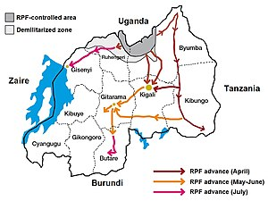

History
By the 17th century Tutsis had established a kingdom in present-day Rwanda where Hutus, Tutsis and Twa were
living
Rwanda became part of German East Africa in 1899. After World War I, it came under Belgian
administration under a League of Nations mandate, and, from 1920, as part of a UN trust territory,
‘Ruanda–Urundi’.
After World War II,Rwanda continued to be administered by Belgium. In 1959, as the independence movement
gathered
pace, the ruling Tutsi elite formed a political party, Union Nationale Rwandaise. The Belgian authorities
encouraged
The Hutu majority also to aspire to political power and, in the same year, a rival party, Parti de
l’émancipation
du
peuple Hutu (Parmehutu), was established.
As the 1960 local elections approached, Parmehutu initiated a Hutu uprising resulting in the death of
many Tutsis
and
forcing King Kigeri V and tens of thousands of Tutsis to flee into exile in Uganda and Burundi. In 1961
the
monarchy
was abolished and Rwanda became a republic, gaining independence from Belgium in 1962, with Parmehutu
leader
Grégoire
Kayibanda as President; many more Tutsis left the country and those who remained faced continuing
state-sponsored
violence and institutionalised discrimination. The most serious eruption of violence at this time was
triggered in
1963 by an incursion from Burundi of exiled Rwandan Tutsis and resulted in the death of at least 15,000
Tutsis at
the
hands of Hutu gangs.
Kayibanda was overthrown in 1973 in a military coup led by army chief of staff Juvénal Habyarimana. There
then
ensued
a period of military rule, until 1978, when a new constitution was promulgated and Habyarimana became
President.
The Rwandese Alliance for National Unity (RANU) was formed in 1979 by Rwandan refugees in exile, to
mobilize
against
divisive politics and genocide ideology, repeated massacres, statelessness and the lack of peaceful
political
exchange. In 1987, RANU became the Rwandese Patriotic Front (RPF).

On 1 October 1990, the RPF launched an armed liberation struggle that ultimately ousted the dictatorship in
1994
and
ended the genocide which cost more than one million lives. Though predominantly a Tutsi movement, the RPF
did win
the
support of a significant element of moderate Hutus. A new constitution promoting multiparty democracy was
introduced
in 1991. Peace talks brokered by the UN in August 1993 resulted in a power- sharing agreement between
Habyarimana
and
the RPF, the Arusha Accords
.
In April 1994 an aircraft carrying Habyarimana and the Burundian President was shot down on its return
from Arusha
to
Kigali, killing all the passengers. The President’s violent death triggered the co-ordinated massacre of
Tutsis –
and
some Hutus who opposed the government – by Hutu militia and elements of the Rwandan army. In response the
RPF began
a
major offensive from the north.A systematic count by the government of Rwanda in collaboration with
genocide
survivor
organisations established that 1,074,017 people were killed, of whom 934,218 have been identified by
names: 93.6%
were killed because they were Tutsi; the others either because they were Hutus married to Tutsis,
resembled Tutsi,
had hidden Tutsi neighbours or were Hutus who opposed the killings In July 1994 the RPF took control of
Kigali and
formed an administration based on the principles of power-sharing and national reconciliation which were
the basis
of
the 1993 Arusha Accords.
The administration comprised five political parties: the RPF, Christian
Democratic Party,
Liberal Party, Republican Democratic Movement and Social Democratic Party. Pasteur Bizimungu was
inaugurated as
President for a five-year term; the RPF military chief Paul Kagame became Vice-President and Defence
Minister. The
government’s priorities were security, rebilding the economy and national reconciliation; it prohibited
any
official
recognition of ethnicity. By February 2007 some 60,000 prisoners accused of genocide had been released.
Shortly after the new government took office, a 70-member Transitional National Assembly was formed,
including
representatives of the five governing parties and three other smaller parties, the Democratic Union for
Rwandese
People, Islamic Party and Socialist Party, as well as six representatives of the Rwandese Patriotic Army
.
The UN Security Council created the International Criminal Tribunal for Rwanda (ICTR) in November
1994 to
contribute to the process of national reconciliation and to the maintenance of peace in the region. The
tribunal
was established in Arusha, United Republic of Tanzania, in February 1995, for the prosecution of those
responsible
for genocide and other serious violations of international humanitarian law committed in Rwanda during
1994.
Some two million Hutus followed the Hutu militias into exile in Zaire, where they were accommodated
in UN
refugee
camps. Many other Hutus fled to Tanzania. By 1995 the Hutu militias and Zairean government forces were
initiating
attacks on Zairean Banyamulenge Tutsis who lived in Eastern Zaire. In October 1996 Rwandan troops and
Zairean
Tutsis attacked the refugee camps where the Hutu militia were based with the aim of repatriating the
refugees.
In
1997 the Zairean regime was overthrown, Laurent Kabila became President and the country was renamed the
Democratic
Republic of Congo (DRC). However, in 1998, when it was clear that the new government of DRC was not
going to
return
the Hutu militias to Rwanda, Rwanda began to lend its support to forces that opposed Kabila. However,
in July
2002
Rwanda and the DRC agreed that Rwanda would withdraw its troops and DRC would work with Rwanda in
disarming
Hutu
militia. By October 2002 Rwanda reported it had completed its withdrawal, and in March 2005 the main
Hutu rebel
group, Forces démocratiques pour la libération du Rwanda, announced the end of its armed struggle. . In
November
2007 Rwanda signed a peace agreement with the DRC, under which DRC was to hand over those implicated in
the
1994
Genocide Against the Tutsi to Rwanda or to the ICTR.
Country information
Overview
More information